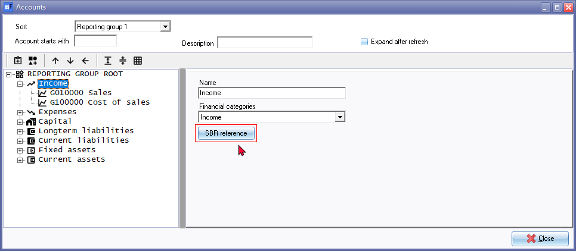
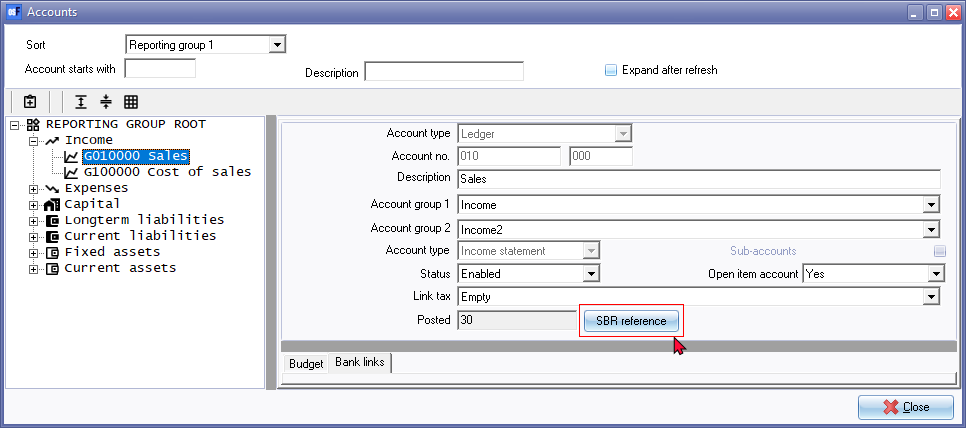
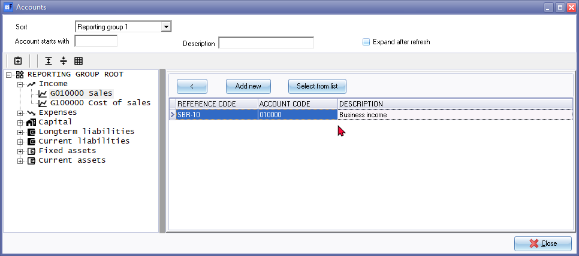
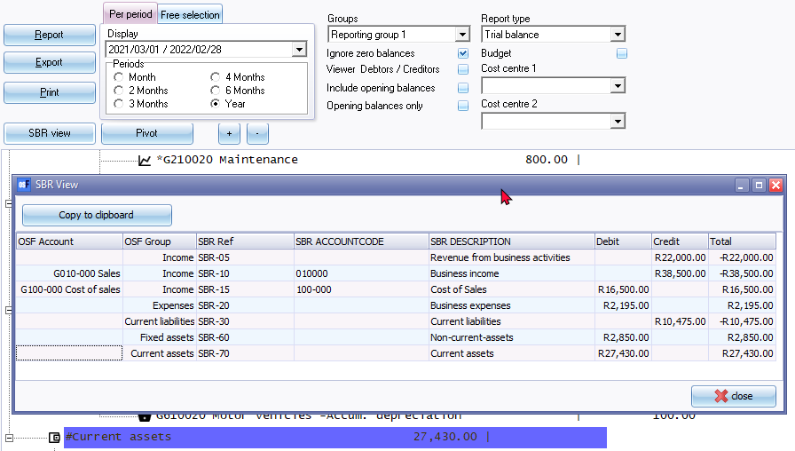
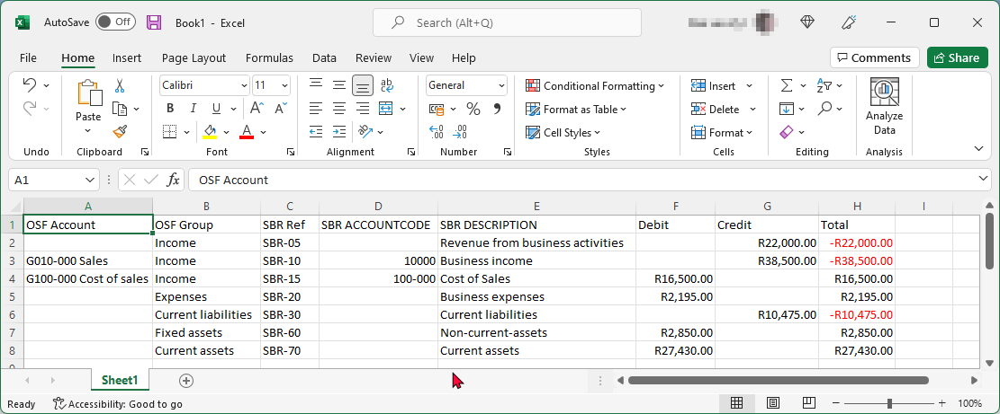
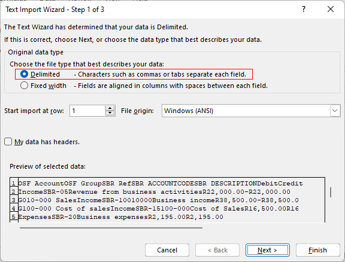
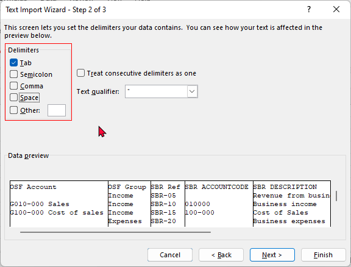
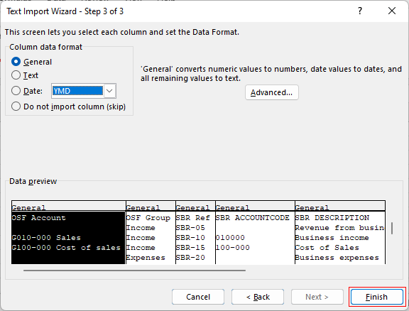
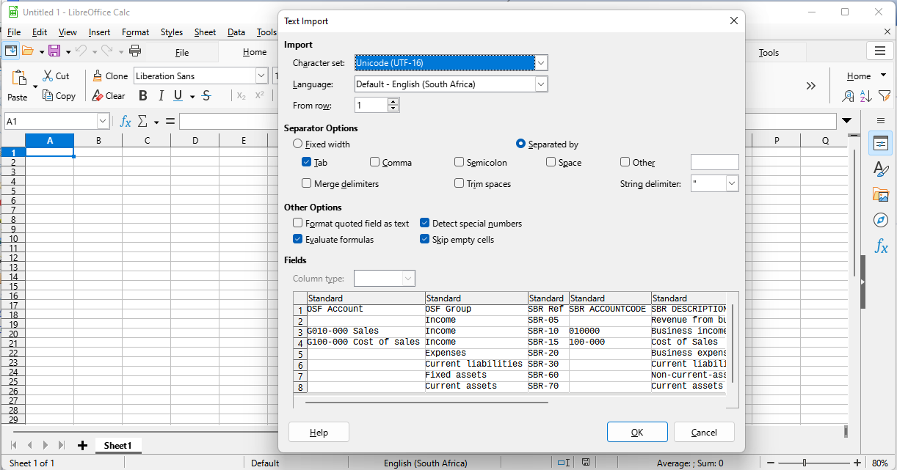
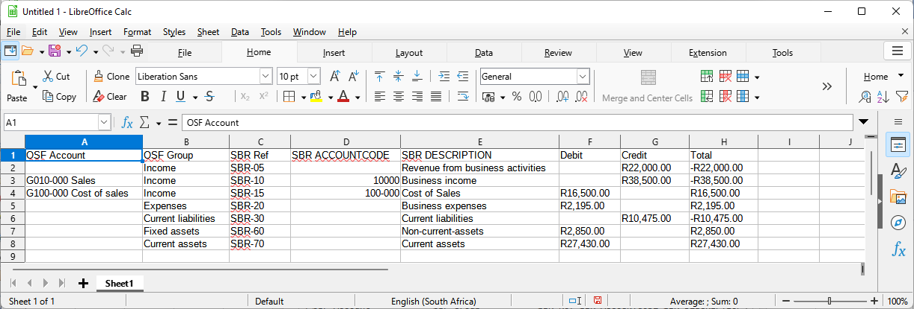

SBR (Standard Business Reporting)
What is Standard Business Reporting (SBR)?
Standard Business Reporting (SBR) is an initiative aimed at simplifying and standardizing the way businesses report their financial information to government agencies and regulatory bodies. It involves the use of digital reporting standards, such as Extensible Business Reporting Language (XBRL), to enable the seamless exchange of business information between different software systems.
SBR streamlines the reporting process by providing a common language and structure for transmitting financial and regulatory data. It eliminates the need for separate reporting formats and manual data entry, reducing the administrative burden on businesses and improving accuracy and efficiency.
The key objectives of Standard Business Reporting are:
- Standardization: SBR promotes the use of common data formats, classifications, and definitions, ensuring consistency and comparability of business information across different reports and jurisdictions.
- Automation: By adopting digital reporting standards like XBRL, SBR enables the automated exchange and processing of financial data, reducing manual intervention and associated errors.
- Simplification: SBR simplifies the reporting process by providing predefined data structures, validation rules, and electronic submission mechanisms, making it easier for businesses to comply with reporting requirements.
- Interoperability: SBR facilitates seamless information exchange between businesses and government agencies, enabling regulatory bodies to receive, process, and analyse data in a more efficient and timely manner.
- Cost reduction: Through standardization and automation, SBR helps businesses save costs associated with report preparation, compliance, and manual data entry.
By implementing SBR, governments aim to enhance transparency, streamline regulatory compliance, and improve the overall quality and accessibility of business information. It benefits businesses by reducing the reporting burden, enhancing data accuracy, and enabling better decision-making through improved access to standardized financial data.
Process of adding Standard Business Reporting (SBR) references to accounts and reporting groups in the osFinancials
SBR view - Add SBR (Standard Business Reporting) references for accounts and reporting groups in Setup → Accounts.
Once the references are set, and generate the Trial balance, Income statement or Balance sheet report types on screen, click on the SBR view button, check, filter and copy to clipboard.
Open your spreadsheet program, and copy the contents into your spreadsheet, save the data, etc.
|
|
Wikipedia - Standard Business Reporting |

Add SBR to Account groups and Accounts
On the Setup ribbon, select Setup → Accounts.

Select a Account group, or an account and click on the SBR reference button.

Click on the Add new button to add a "REFERENCE CODE, ACCOUNT CODE" or "DESCRIPTION".

Click Save. Once you have entered your SBR references close the "Accounts" screen.
SBR View
Once the SBR references is defined, you may generate the Trial balance, Income statement or Balance sheet report types for specific periods.
Click on the SBR view button. The "SBR View" screen will list your defined SBR references and the Debit, Credit and Totals for the selected report type and periods.

|
|
The Trial balance, will include SBR references for all account type in the Chart of Accounts. The Income statement will include only SBR references for Income and Expense account types. The Balance sheet will include only SBR references for Balance sheet account types (excluding Income and Expense account types). |

Click on the Copy to clipboard button.
Open a Spreadsheet and paste the contents of the "SBR View" screen into the spreadsheet.
Example - Paste in Microsoft Excel
Open a Microsoft Excel spreadsheet or Workbook.
Select the Column and row where you wish to paste the content of the "SBR View" screen into the spreadsheet.
Click Paste option or press the Ctrl+V keys. An example of the "SBR View" content pasted in a Microsoft Excel spreadsheet, is as follows: 
|
|
Optional - Use Import Text Wizard  Delimiters - Select Tab and do not select Space.  |
Example - Paste in LibreOffice
Open a LibreOffice Calc spreadsheet.
Select the Column and row where you wish to paste the content of the "SBR View" screen into the spreadsheet.
Click Paste option or press the Ctrl+V keys. The "Text Import" screen will be launched.

|
|
Separator Options - Separated by - Select Tab and do not select Space. |

Click OK. An example of the "SBR View" content pasted in a LibreOffice spreadsheet, is as follows:
